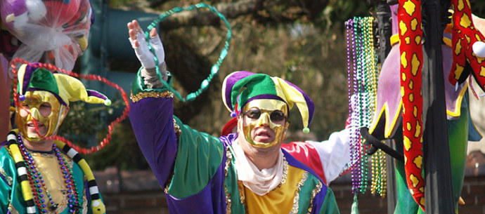

About The Festival:

Mardi Gras was brought to Louisiana by early French settlers.
The first record of the holiday was in
Louisiana in 1699. The starting date of festivities in New Orleans is unknown,
but an account from 1743
notes that the custom of Carnival balls was already established by that date.
Once a year New Orleans descends into a flurry of chaos, crowds,
and colorful masks as the city celebrates
Mardi Gras– the last day of the Carnival celebration.
Mardi Gras, or Fat Tuesday as it's also known, is the
Christian feasting period before the start of Lent on Ash Wednesday.
But in the Big Easy the day of
indulgence takes on a whole new meaning as galas, parades,
and parties take over the city– it's even a
Louisiana state holiday. This year the festivities will take place on March 5th,
so whether you celebrate by
catching beads on Bourbon or digging into a King Cake– here's
everything you need to know about the unique
history and culture of Mardi Gras.
An unusual Mardi Gras celebration is found in the rural areas surrounding small towns in Cajun Country such as
Mamou, Eunice and Church Point.
The Courir de Mardi Gras, or the running of the Mardi Gras, involves costumed
locals going house to house on horseback, performing tricks and stunts in an effort to secure donations of
chicken, sausage, vegetables and rice that will be used at the end of the day to make a massive gumbo for the
community at a downtown street party, usually featuring live Cajun and zydeco music.
Our mayor:
LaToya Cantrell is the Democratic mayor of New Orleans.
She was sworn into office on May 7, 2018, becoming
the first woman to lead New Orleans in the city's histor.
Cantrell rose to local prominence through her work to
recover and restore the Broadmoor neighborhood following
Hurricane Katrina in 2005.
In 2012, she won a special election for the New
Orleans City Council to serve a partial term.
Cantrell was elected to a full term in 2014,
where she sponsored a measure
prohibiting smoking in city bars and casinos.
She first entered politics as a member of the Broadmoor
Improvement Association, which saved the Broadmoor neighborhood
following Hurricane Katrina in 2005 and secured $5
million inpledges from the Clinton Global Initiative to rebuild.